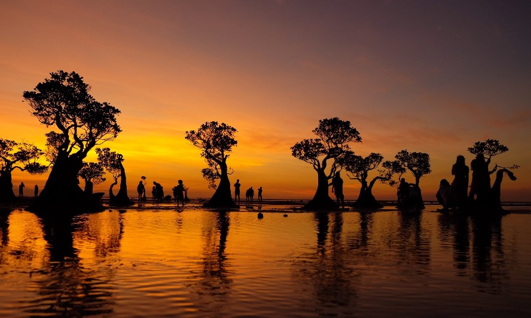
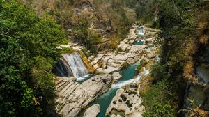
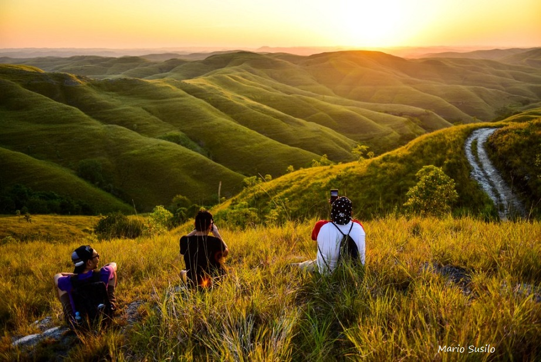
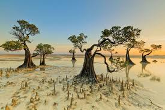
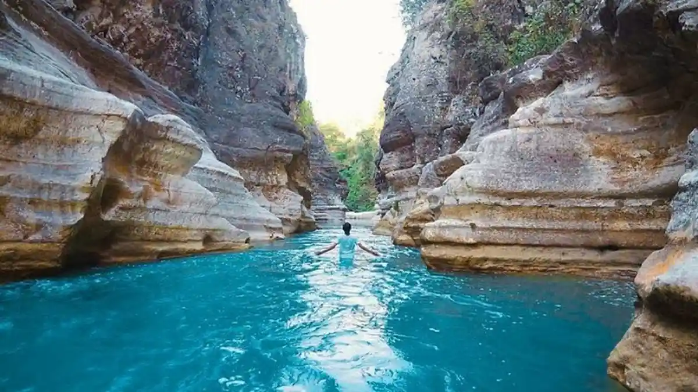
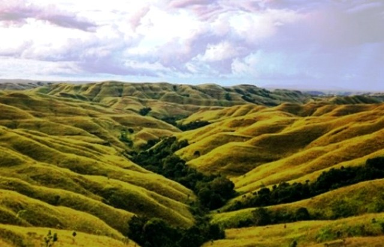

Jelajahi Keindahan Sumba Timur
Sumba Timur terkenal dengan pantai eksotis, savana yang luas, budaya yang kaya, serta keramahan masyarakat lokal yang memikat.
Lihat DestinasiDestinasi Wisata Populer

Pantai Walakiri
Pantai terkenal dengan pohon mangrove unik yang sangat indah saat matahari terbenam.

Bukit Wairinding
Hamparan savana hijau dan kuning yang menjadi ikon wisata alam Sumba Timur.

Air Terjun Tanggedu
Dijuluki Grand Canyon-nya Sumba karena tebing dan aliran airnya yang memukau.
Statistik Pariwisata
50+
Destinasi Wisata
100K+
Wisatawan
20+
Festival Budaya
Galeri Wisata






Kontak Pariwisata
Email: pariwisatasumbatimur@gmail.com
Instagram: @pariwisata_sumba_timur
Telepon: +6281332405339